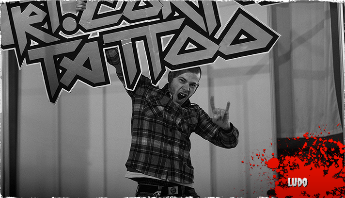
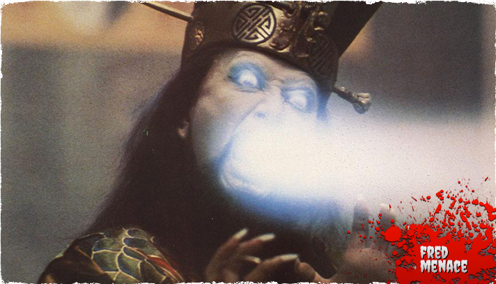

Yannick

A la question « est-ce que ça fait mal »? J’ai l’habitude de répondre on s’en fout !!!
L’acte du tatouage est tellement rapide que la douleur est infime,enfin, tout dépend qui est de l’autre côté de l’aiguille…Ce que j’aime dans le tatouage c’est avant tout le contact avec les gens, certains ont peur, d’autres sont plutôt excités,certains viennent seuls,d’autres accompagnés.
Quoi qu’il en soit, la démarche est différente d’une personne à l’autre, mais le dépassement de soi est souvent présent. Je pratique tout type de tatouage, mais comme l'ensemble de notre équipe, j'ai une attirance particulière pour le taouage maori.
Je suis fort de 10 ans d’expérience dans le domaine du tatouage.
Yannick est au studio du mardi au samedi ! Passez, appelez (01 40 13 07 34) ou envoyez un mail (contact@artcorpus.fr) pour prendre rdv !
Ludo

Moi c’est Ludovic aka Kid Inck TA2. J’ai grandi à Gégenne dans la banlieue Nord de Paris. Mon premier contact avec le tattoo a été en trainant dans les usines désaffectées pour y faire du graffiti pendant que mes potes gitans s’occupaient du recyclage du métal. Ce n’est que quelques années plus tard que je m’y suis intéressé sérieusement.
Après quelques conseils glanés de-ci de-là, je me suis improvisé tatoueur de caves en caves.
De rencontres en rencontres, j’ai croisé la route de Yan-Yan Aka le boss de la « Buzz tattoo crew » qui me fit la proposition de faire ma formation à ses cotés.
C’est comme cela que j’ai rejoint les rangs de la Buzz Army.
J’écumais les épidermes le temps de ma formation plus quelques années d’allégeance supplémentaires.
Pendant que je guerroyais avec la Buzz Army une dermo fihter Street m’opposa au molosse de Roberto Aka Art Corpus. Mais ce n’est que de nombreuses années plus tard, isolés derrière les lignes ennemies, que Roberto et moi avons pu sympathiser. C’est fin 2007 que je rejoins les légions Art Corpus.
Ludo est au studio une semaine par mois en général, nous contacter pour les détails !
Fred
 D’abord diplomé d’un doctorat 3ème Dan en sérigraphie à l’Université du C.A.E.S. (Ris orangis), il poursuit ses recherches occultes en approfondissant ses connaissances dans les sciences subliminales des images. Il créé alors «Villains Conspiracy», une sorte de salade niçoise mélangeant théorie du complot et graphisme à la mode, le tout encré sur textile.
Un beau matin, en sortant de son laboratoire secret, il est violemment percuté par une météorite venant de la mystérieuse planète Izu Sa Sha. C’est alors qu’il découvre ses nouveaux pouvoirs de customisation corporelle. Dans sa soif d’asservir le monde, il s’unit avec la redoutable et maléfique confrérie d’Art Corpus.
Fred est au studio tous les jours sauf le mercredi !